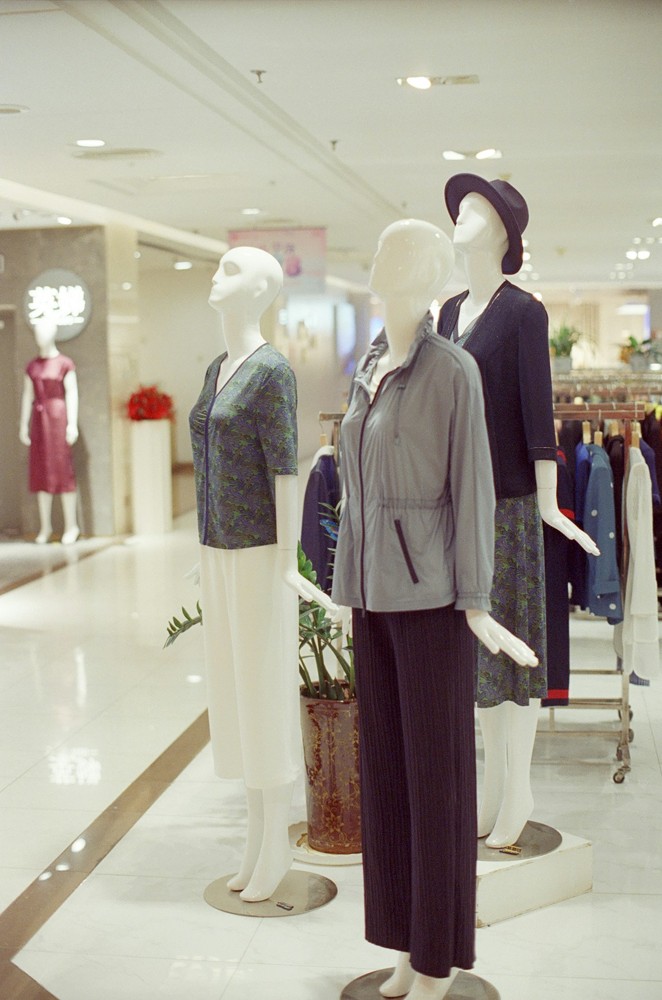

여성복 브랜드 맞춤
유명 브랜드 여성복 라인에서 톤앤매너·타깃·가격대에 맞는 실루엣과 디테일을 설계해 왔습니다. 브랜드 DNA를 지키면서 시즌별 신선함을 더합니다.
여성복 디자이너 · 10년 경력
여성복 시즌 라인을 기획·디자인하며, 브랜드 아이덴티티와 착용 경험을 함께 설계합니다. 스케치부터 피팅·양산까지 끝까지 책임집니다.
연락하기My Approach
유명 브랜드 여성복 라인에서 톤앤매너·타깃·가격대에 맞는 실루엣과 디테일을 설계해 왔습니다. 브랜드 DNA를 지키면서 시즌별 신선함을 더합니다.
패턴·봉제·원단 이슈를 초기에 잡는 피팅 중심 워크플로에 익숙합니다. 디자인 의도가 제품으로 구현되도록 생산 단계까지 소통합니다.
Experience
여성복 시즌 단위로 일관된 라인을 구축하고, 납기·품질을 동시에 맞추는 일에 익숙합니다. 실루엣·핏·디테일로 브랜드 가이드와 차별화의 균형을 맞춰 왔습니다.
[회사명 또는 브랜드명]

[회사명 또는 브랜드명]
좋은 옷은 트렌드보다 착용자와 브랜드의 신뢰에서 완성됩니다.
— [이름], 여성복 디자이너
Skills
트렌드 리서치, 무드·컬러·실루엣 보드 제작부터 스타일 도식, 스펙 정리까지 한 시즌 라인을 끝까지 이끕니다.
각 브랜드의 톤앤매너·타깃·가격대에 맞는 디자인을 구현합니다. DNA를 흐리지 않으면서 시즌별 신선함을 더하는 데 강점이 있습니다.
피팅 중심 워크플로로 패턴·봉제·원단 이슈를 초기에 잡고, 디자인 의도가 제품으로 구현되도록 생산 단계까지 소통합니다.
시즌 캘린더에 맞춘 기획, 샘플, 수정, 양산 업무를 우선순위에 따라 조율합니다.
디자인: [Illustrator / Photoshop / CLO 3D 등]
협업: [Notion, PLM, ERP 등]
기타: [텍스타일 지식, 프린트·염색 이해 등]
FAQ
여성복(캐주얼·데일리·아우터·니트 등) 분야에서 시즌 컨셉 기획, 디자인, 도식·패턴 협업, 샘플 피팅, 생산 커뮤니케이션을 담당했습니다.
[브랜드 A], [브랜드 B], [브랜드 C] 등 유명 브랜드에서 브랜드 가이드라인과 차별화된 디테일의 균형을 맞추며 작업했습니다.
단기: 시즌 일정·팀 프로세스 적응, 안정적인 라인업
구축.
중기: 데이터·현장 피드백 반영, 리오더·베스트 아이템
비중 확대.
장기: 브랜드 디자인 언어를 정립·발전시키는 코어
디자이너로 성장.